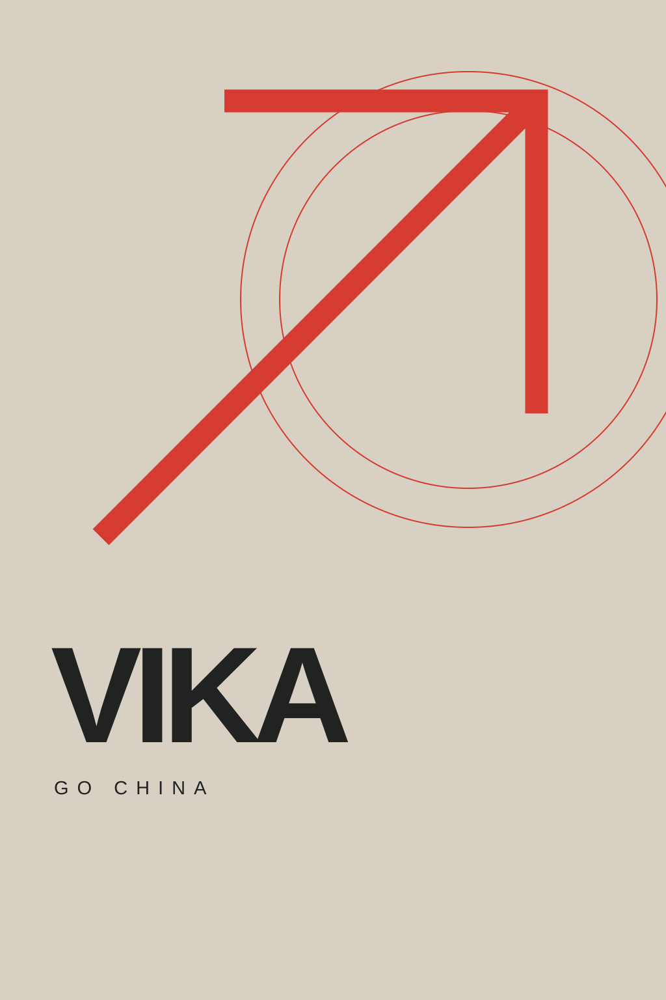

01 / LANGUAGE YEAR
Языковой
год
Погрузиться в Китай, подтянуть китайский и подготовиться к следующему шагу.
Помогаем школьникам и студентам со всего мира поступить в Китай.
Университет, языковой год или первая поездка — найдём маршрут, который подходит тебе.
Идеальный план не нужен. Достаточно «я хочу».

01 / ВЫБЕРИ СВОЙ МАРШРУТ
Не обязательно сразу знать ответы на все вопросы. Начнём с того, что тебе интересно.
Погрузиться в Китай, подтянуть китайский и подготовиться к следующему шагу.
Найти свою специальность, город и университет. Рассмотреть программы на английском и китайском и варианты финансирования.
Продолжить образование, открыть новое направление и выстроить стратегию подачи на финансирование.
Короткая образовательная поездка, чтобы увидеть Китай и университетскую среду изнутри.
Пока не знаешь, что выбрать? Это тоже хорошая точка старта.
Разберёмся вместе
VIKA · GO CHINA02 / ТВОЙ ЧЕЛОВЕК В КИТАЕ
Помогаем разобраться в поступлении и выбрать маршрут с учётом твоих целей.
Город, программа, язык, документы и сроки — поможем превратить вопросы в понятные шаги.
Начинаем с твоих интересов и ожиданий, чтобы план отражал то, что важно именно тебе.
Потому что у каждого «хочу» должен быть понятный следующий шаг.
Начинаем с твоих оценок, языка, бюджета и целей — и только потом ищем подходящие программы.
Разбираем документы, заявки и дедлайны так, чтобы ты понимал, что происходит и что делать дальше.
Обсудим университетскую жизнь и бытовые вопросы вместе с подготовкой к поступлению.
03 / РАЗНЫЕ ЛЮДИ. РАЗНЫЕ МАРШРУТЫ.
Кто-то начинает с языка. Кто-то — с диплома. Кто-то — с «а что, если?». У каждого есть своя точка старта.
 LANGUAGE YEAR01
LANGUAGE YEAR01Рассмотрим языковой год как точку входа, а затем — подготовку к следующему этапу.
Рассмотрим англоязычные программы и подберём университеты под твой профиль.
MASTER / FUNDING03Разберём академический опыт и построим стратегию подачи на программу и финансирование.
Начнём с интересов, бюджета и ожиданий — и сделаем первый шаг понятным.
ИСТОРИИ И ОТЗЫВЫ СТУДЕНТОВ
Выше — примеры маршрутов, а не результаты студентов. Для этого раздела готовим подтверждённые истории и отзывы.
04 / ТВОЯ НОВАЯ ГЛАВА НАЧИНАЕТСЯ ЗДЕСЬ
Давай начнём с разговора. Расскажи, на каком ты этапе, — и разберёмся, куда двигаться дальше.
01 / Твой профиль и цели
02 / Подходящие варианты учёбы
03 / Понятный следующий шаг
Чемодан пока не собирай. Начнём с первого шага ↗
ЕЩЁ ОДИН ВОПРОС
Даже если кажется, что все вокруг уже знают ответ.
Задать свой вопросМожно рассмотреть языковой год или программы на английском. Языковые требования зависят от университета и программы — проверим их для твоего списка вариантов.
Разберём варианты финансирования под твой профиль. Требования и результат зависят от программы и конкурса — заранее обещать грант нельзя.
Работаем со школьниками и студентами со всего мира. При подборе программ учитываем гражданство, образование и документы — с этого и начнём.
Конечно. Сначала обсудим интересы, язык, бюджет и цели, а потом вместе сузим круг подходящих вариантов.
Да. Напиши Вике, кто будет участвовать и какие вопросы хочется обсудить. Переезд в другую страну — важный шаг для всей семьи.